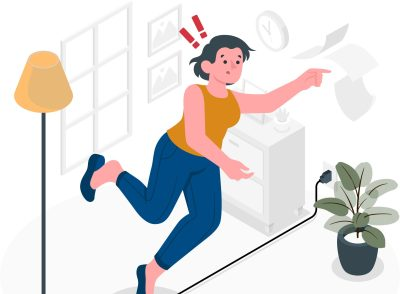
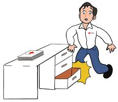
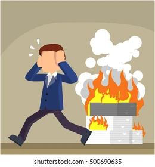
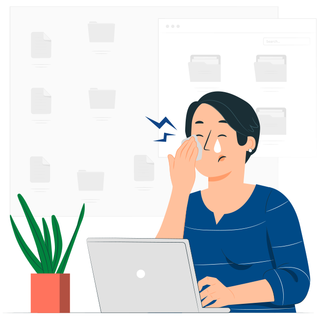
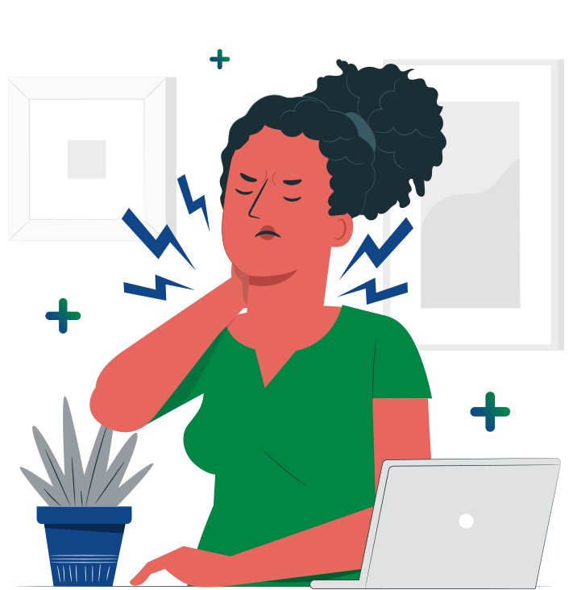
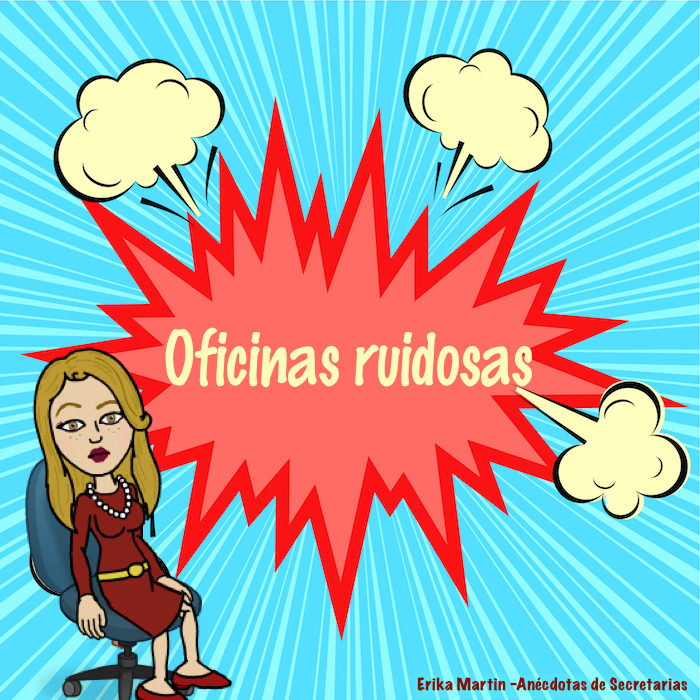

Riesgo

El riesgo deriva de la exposición a ciertos factores presentes en el entorno laboral, los cuales deben ser evaluados en términos de su probabilidad de ocurrencia y la gravedad de sus posibles consecuencias.
En este sentido, resulta fundamental identificar adecuadamente los riesgos existentes para establecer las medidas preventivas necesarias para salvaguardar la salud de los trabajadores en el desempeño de sus funciones.
Caídas al mismo nivel

Resbalones, tropezones o caídas causadas por superficies mojadas, desordenadas o mal mantenidas.
Caídas a distinto nivel
Caídas desde escaleras, andamios, o niveles superiores. Pueden causar fracturas, lesiones en la cabeza o la columna.
Choques y golpes

Lesiones por impacto con maquinaria, herramientas o vehículos en el lugar de trabajo.
Riesgos Eléctricos

Electrocución o quemaduras por contacto con cables, equipos o instalaciones eléctricas defectuosas.
Incedios

Quemaduras, inhalación de humo o lesiones graves en caso de incendio debido a fallos en equipos eléctricos, materiales inflamables o descuidos.
Uso de Pantallas

Fatiga visual, dolores de cabeza, dolor en cuello y espalda, trastornos musculoesqueléticos.
Trastornos musculoesqueléticos

Dolores y lesiones crónicas en la espalda, cuello, hombros y extremidades debido a movimientos repetitivos, posturas incorrectas o sobreesfuerzos.
Estrés
Fatiga mental, irritabilidad, problemas de concentración, enfermedades cardiovasculares o psicológicas debido a cargas de trabajo excesivas o conflictos en el ambiente laboral.
Burnout (agotamiento profesional)
Agotamiento extremo, pérdida de motivación y rendimiento, afectación a la salud mental y física.
Acoso (laboral o sexual)

Deterioro emocional y psicológico, afectación al clima laboral, posible litigio legal.
Ruido

Pérdida auditiva, estrés, disminución en la capacidad de concentración.
Prevención: Usar protección auditiva, reducir el ruido con materiales aislantes, realizar mediciones regulares de los niveles de ruido, organizar áreas de trabajo silenciosas.